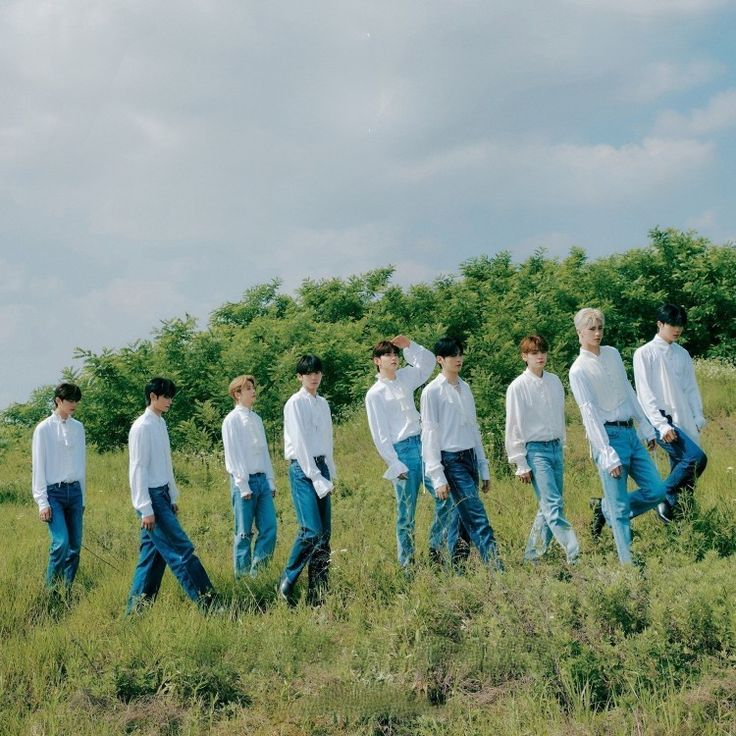
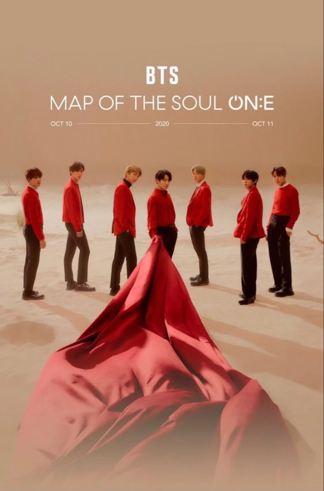

2013—2016
Youth in bloom
School-day rebellion grows into a cinematic story of youth, uncertainty, and becoming.
2013 → 2022
Search by title or filter by release type. Click a row for details.
| Year | Title | Type | Release |
|---|
No album matches your search.
Types are simplified for this fan project. Check official sources for exact classifications.
LISTEN BY CHAPTER
A quick path through the moods and themes that connect the releases above.

School-day rebellion grows into a cinematic story of youth, uncertainty, and becoming.

A bright, vulnerable trilogy that moves from first love toward acceptance and self-worth.

Reflection, comfort, and celebration meet in records created through a changing world.